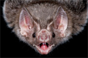
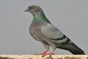

Bat Services
We take very special care to perform all of our bat venting and exclusion in a way that follows all local and state laws and brings no harm to the bat or its baby’s during maternity season. Bats are very beneficial in our environment and can consume up to 1000 insects an hour, but when they inhabit a structure where humans live or work there can be risks associated with their presence that need to be mitigated so it is safe for us and them.
At Vital Pest we have learned over our 13 years how to safely and creatively solve bat infestations. Whether you have 5 or 5,000 we can solve it. We utilize materials for exclusion that are esthetically pleasing and will last in all temperatures and weather for a minimum of 10 years if left un-disturbed. We take extra care in choosing the best materials based on the structure or home. Once we are 100% sure all of the bats have left the structure we are able to treat if needed for bat bugs or ticks that may have used the bat as a host. And as a final step if possible we will find a location to install a bat box to allow the bats to safely and comfortably live.
Just call us for a free inspection and proposal, we only do what’s needed and we do at a very fair price.
You will love the results….we guarantee it! Call-707-761-1195 or 530-202-0505

Bird Services
We know pigeons and all types of nuisance birds can drive you crazy with noise and droppings not to mention the damage they will cause to your home or building and the health risks that can be associated with those dropping. We have spent over 13 years working on all size projects utilizing the most advanced techniques to eliminate them once and for all.
Our system is a holistic approach where we utilize sound or exclusion devices coupled with baiting and focus on the environment. We examine the problem very carefully to build a program that will yield the best sustainable result at a cost that is affordable. We use only the best products on the market and create ones to fit any situation. We have one of the best guarantees in the industry and we stand behind our work. When we say we will solve the problem we will stay until the job is done…no nickel and diming you thru the process…just 1 price and 1 quality result.
Give us a call there is no charge for an inspection and proposal. You will love our work and result….GUARENTEED! Call-707-761-1195 or 530-212-0505